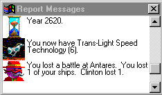

Spaceward Ho! spielen
Nachrichten und das Berichtsfenster

Das Berichtsfenster ist ein scrollbarer Verlauf der wichtigen Dinge, die in den letzten Zügen geschehen sind. Jede Nachricht erscheint zu Beginn jedes Zuges in der linken unteren Ecke der Sternkarte. Klicken Sie auf die Nachricht, geht es zur nächsten.
Es gibt viele verschiedene Arten von Nachrichten. Erkunden Sie einen Stern, bekommen Sie eine Nachricht über Temperatur und Schwerkraft des Sterns. Kolonisieren Sie einen Planeten, bekommen Sie eine freundliche Meldung. Sind Sie in einen Kampf verwickelt, bekommen Sie eine Nachricht, die das Ergebnis zusammenfasst.
Jeden Zug erhalten Sie Tipps zum Spielen von Spaceward Ho!. Haben Sie sie alle gesehen, können Sie sie abschalten, indem Sie im Menü „Optionen“ Einstellungen… wählen.
Sie können im Berichtsfenster auf eine alte Nachricht klicken, um weitere Informationen zu erhalten. Klicken Sie zum Beispiel auf eine Kampfzusammenfassung, spielt Spaceward Ho! den Kampf noch einmal ab. Klicken Sie auf eine Nachricht, die einen Planeten erwähnt, scrollt die Karte zu diesem Planeten und wählt ihn aus.
Deutsche Übersetzung des Remakes, keine offizielle, des Handbuchs von Delta Tao. Die Seite auf Englisch (auf Englisch).